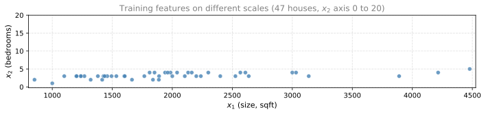
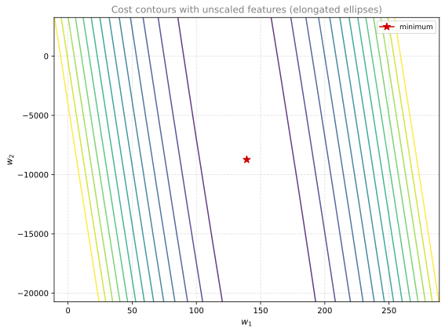
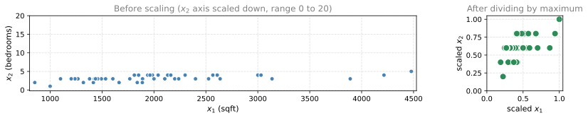
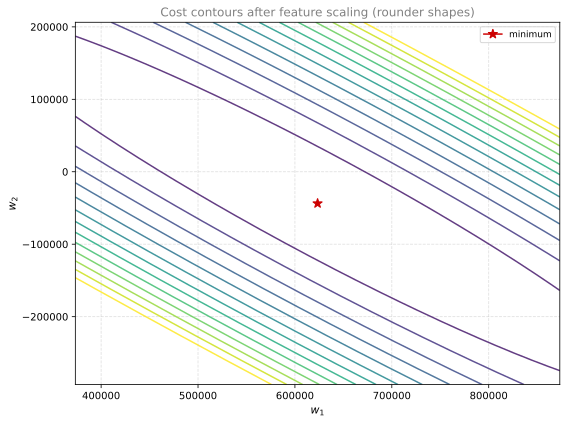
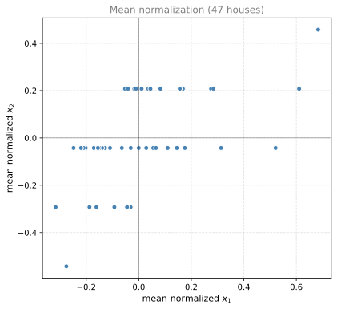
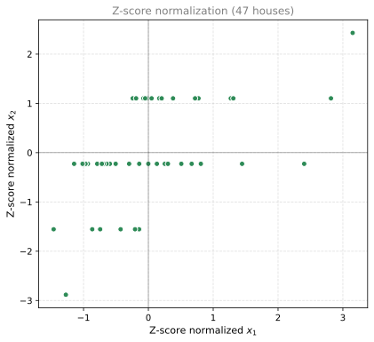

Feature Scaling
machine-learning
supervised-learning
regression
In the multiple variable lab, gradient descent ran slowly and predictions were still off after 1000 iterations. One reason is that the features had…
Why Feature Scaling?
In the multiple variable lab, gradient descent ran slowly and predictions were still off after 1000 iterations. One reason is that the features had very different scales (house size in thousands of sqft vs bedroom counts in single digits).
This section introduces feature scaling, a technique that can help gradient descent run much faster when features span very different ranges.
Review Questions
1. What problem did the multiple variable lab hint at when features were left unscaled?
TipAnswer
Gradient descent converged slowly and predictions were still inaccurate. Features like size (thousands of sqft) and bedrooms (0 to 5) live on very different numeric scales.
Feature Size vs Parameter Size
Consider predicting house price using two features:
- \(x_1\): size of the house (sqft), typically ranging from about 300 to 2000
- \(x_2\): number of bedrooms, typically ranging from 0 to 5
Here \(x_1\) takes on a large range of values, while \(x_2\) takes on a small range.
Concrete Example
Take one training example: a 2000 sqft house with 5 bedrooms and a true price of $500,000 (or 500 in thousands of dollars).
What are reasonable values for \(w_1\) and \(w_2\)? Compare two possibilities (with \(b = 50\) in both cases):
Possibility 1: \(w_1 = 50\), \(w_2 = 0.1\), \(b = 50\)
\[ f_{\vec{w},b}(\vec{x}) = 50 \times 2000 + 0.1 \times 5 + 50 = 100{,}050.5 \]
The model predicts about 100,050 thousand dollars (over $100 million). That is clearly far from $500,000. These are not good parameter choices.
Possibility 2: \(w_1 = 0.1\), \(w_2 = 50\), \(b = 50\)
\[ f_{\vec{w},b}(\vec{x}) = 0.1 \times 2000 + 50 \times 5 + 50 = 200 + 250 + 50 = 500 \]
The model predicts 500 thousand dollars ($500,000), which matches the true price.
Notice the pattern:
- When a feature has a large range (like size up to 2000 sqft), a good model tends to learn a relatively small weight (like \(w_1 = 0.1\)).
- When a feature has a small range (like bedrooms from 0 to 5), a good model tends to learn a relatively large weight (like \(w_2 = 50\)).
Review Questions
1. For a feature whose values range from 300 to 2000, would you expect its weight \(w_1\) to be large or small in a good model?
TipAnswer
Relatively small. Large feature values get multiplied by \(w_1\), so a small weight keeps the contribution reasonable.
1. With \(w_1 = 50\), \(w_2 = 0.1\), \(b = 50\), and input \(x_1 = 2000\), \(x_2 = 5\), why is the prediction so far off?
TipAnswer
\(w_1 = 50\) is too large for a feature that can be as big as 2000. The term \(50 \times 2000 = 100{,}000\) dominates the prediction and blows it up to over $100 million (in thousands-of-dollars units).
Effect on Cost Contours
How does this relate to gradient descent?
Feature Scatter Plot
If you plot the 47-house housing training set with \(x_1\) (size) on the horizontal axis and \(x_2\) (bedrooms) on the vertical axis, the horizontal axis spans a much wider range than the vertical axis. The data points are spread far along \(x_1\) but clustered in a narrow band along \(x_2\).
Tall, Skinny Contours
Now look at the cost function \(J(\vec{w}, b)\) as a contour plot over \(w_1\) and \(w_2\) (with \(b\) fixed). Because \(w_1\) is multiplied by large values of \(x_1\), a small change in \(w_1\) can have a large impact on the predicted price and therefore on the cost \(J\).
In contrast, it takes a much larger change in \(w_2\) to change the predictions noticeably, because \(x_2\) values are small.
The contour lines form ovals or ellipses that are short on one side and long on the other. The \(w_1\) axis spans a relatively narrow range while the \(w_2\) axis spans a much wider range.

Gradient Descent Zigzags
If you run gradient descent on unscaled data, the contours are so tall and skinny that the algorithm may bounce back and forth for a long time before reaching the global minimum. Each step that adjusts \(w_1\) overshoots in one direction, then the algorithm corrects \(w_2\), and the path zigzags rather than rolling straight downhill.
Review Questions
1. Why does a small change in \(w_1\) have a large effect on the cost when \(x_1\) values are large?
TipAnswer
The prediction includes the term \(w_1 x_1\). When \(x_1\) can be 2000, even a tiny change in \(w_1\) multiplies across a large number and shifts the predicted price (and the cost) dramatically.
1. What shape do cost contours tend to have when features are on very different scales?
TipAnswer
Tall, skinny ovals or ellipses. They are narrow along the \(w_1\) direction and stretched along the \(w_2\) direction (or vice versa, depending on which feature has the larger range).
1. What happens to gradient descent on tall, skinny contours?
TipAnswer
It tends to zigzag or bounce back and forth, taking many iterations to reach the minimum instead of following a direct downhill path.
Rescaling Features
A useful fix is to scale the features: transform the training data so that each feature takes on a comparable range of values.
The plots below use the same 47-house housing training set (\(x_1\) size in sqft, \(x_2\) bedrooms). First you see the data before and after scaling; then the cost contours after scaling look rounder than the unscaled contours above.

When you run gradient descent on the cost function built from rescaled features, the contours look more like circles and less tall and skinny.

How to Scale Features
Here are three common ways to rescale features so they have comparable ranges.
Scaling by Maximum
If \(x_1\) ranges from about 852 to 4478 sqft in the housing training set, one approach is to divide each value by \(\max(x_1)\):
\[ x_{1,\text{scaled}} = \frac{x_1}{\max(x_1)} \]
Scaled \(x_1\) then ranges from about 0.19 up to 1.
Similarly, if \(x_2\) ranges from 1 to 5 bedrooms, divide each value by \(\max(x_2)\):
\[ x_{2,\text{scaled}} = \frac{x_2}{\max(x_2)} \]
Scaled \(x_2\) ranges from about 0.2 to 1.
Mean Normalization
Mean normalization recenters features around zero. Values can be negative or positive, often roughly between \(-1\) and \(+1\).
For feature \(x_1\), compute the mean \(\mu_1\) on the training set. For the 47-house dataset, \(\mu_1 \approx 2001\) sqft. Then:
\[ x_{1,\text{norm}} = \frac{x_1 - \mu_1}{\max(x_1) - \min(x_1)} \]
This gives a range of about \(-0.32\) to \(0.68\).
For \(x_2\), \(\mu_2 \approx 3.2\) bedrooms:
\[ x_{2,\text{norm}} = \frac{x_2 - \mu_2}{\max(x_2) - \min(x_2)} \]
This gives a range of about \(-0.54\) to \(0.46\).

Z-Score Normalization
Z-score normalization uses the mean \(\mu_j\) and standard deviation \(\sigma_j\) of each feature:
\[ x_{j,\text{zscore}} = \frac{x_j - \mu_j}{\sigma_j} \]
If you have not studied standard deviation yet, see that section in the probability course. In short, \(\sigma_j\) measures how spread out the values of feature \(j\) are around the mean.
NoteStandard Deviation (optional)
For the definition of \(\sigma\) and why it uses the same units as the original feature, see Standard Deviation in the probability course. The bell-shaped normal (Gaussian) distribution is also parameterized by \(\mu\) and \(\sigma\). You do not need that full theory to apply Z-score normalization here; NumPy can calculate \(\sigma_j\) with np.std.
For the 47-house training set, \(\mu_1 \approx 2001\) sqft with \(\sigma_1 \approx 786\), and \(\mu_2 \approx 3.2\) bedrooms with \(\sigma_2 \approx 0.75\). After Z-score normalization, \(x_1\) ranges from about \(-1.5\) to \(3.2\) and \(x_2\) from about \(-2.9\) to \(2.4\).

Rule of Thumb
When performing feature scaling, aim to get each feature into a comparable range, often roughly \(-1\) to \(+1\). That target is flexible:
- Ranges like \(-3\) to \(+3\) or \(-0.3\) to \(+0.3\) are usually fine.
- A feature from 0 to 3 may work without rescaling.
- A feature from \(-2\) to \(+0.5\) is often acceptable as well.
When to Rescale
Rescale when a feature sits on a very different scale than the others:
| Feature | Example range | Rescale? |
|---|---|---|
| \(x_3\) | \(-100\) to \(+100\) | Yes, very different from features near \(\pm 1\) |
| \(x_4\) | \(-0.001\) to \(+0.001\) | Yes, values are extremely small |
| \(x_5\) (body temperature, °F) | 98.6 to 105 | Yes, values near 100 slow gradient descent |
There is almost never harm in feature scaling. When in doubt, scale the features.
Review Questions
1. How do you scale \(x_1\) by the maximum?
TipAnswer
Divide each \(x_1\) by \(\max(x_1)\) on the training set. For the housing data, that is about 4478 sqft.
1. In mean normalization, what does subtracting \(\mu_1\) accomplish?
TipAnswer
It centers the feature around zero instead of having only positive values.
1. What two statistics does Z-score normalization use for each feature?
TipAnswer
The mean \(\mu_j\) and the standard deviation \(\sigma_j\).
1. Should you rescale a feature that ranges from \(-0.3\) to \(+0.3\)?
TipAnswer
Usually not required. That range is already close to the \(\pm 1\) guideline and is comparable to other well-scaled features.
What Comes Next
With feature scaling, gradient descent often runs much faster. Whether or not you scale, you still need a way to tell if gradient descent is working and converging toward a good minimum.
Upcoming videos cover how to recognize convergence and how to choose a good learning rate \(\alpha\).